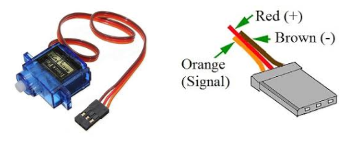
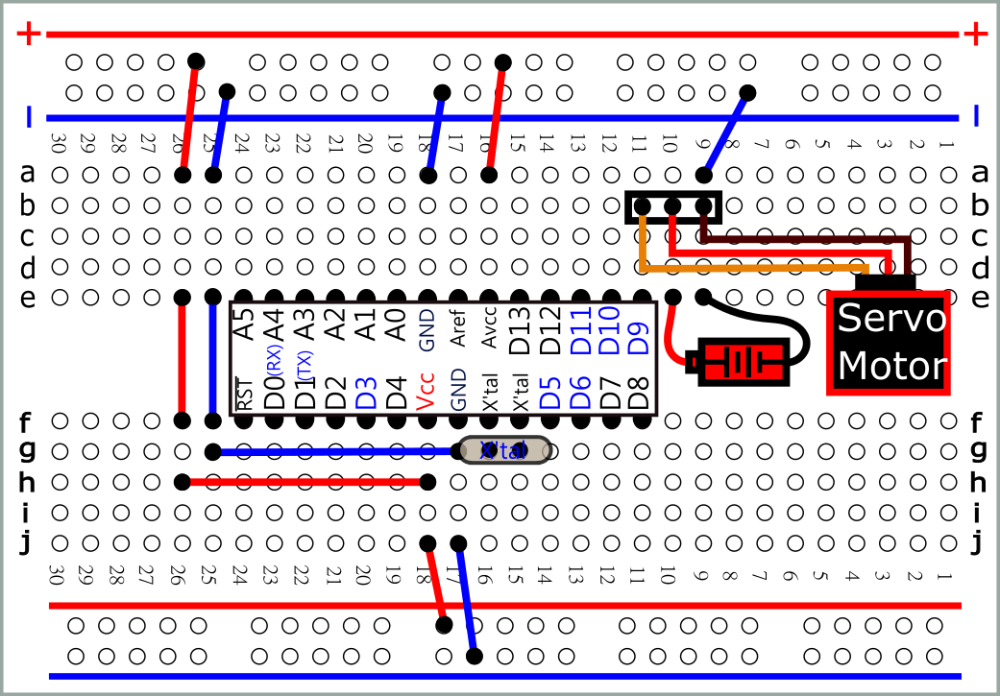
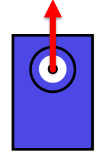
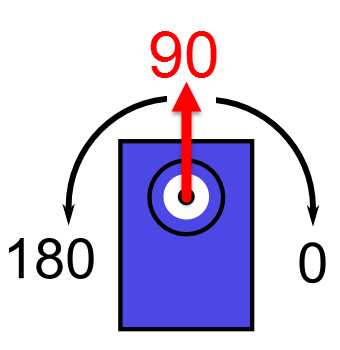
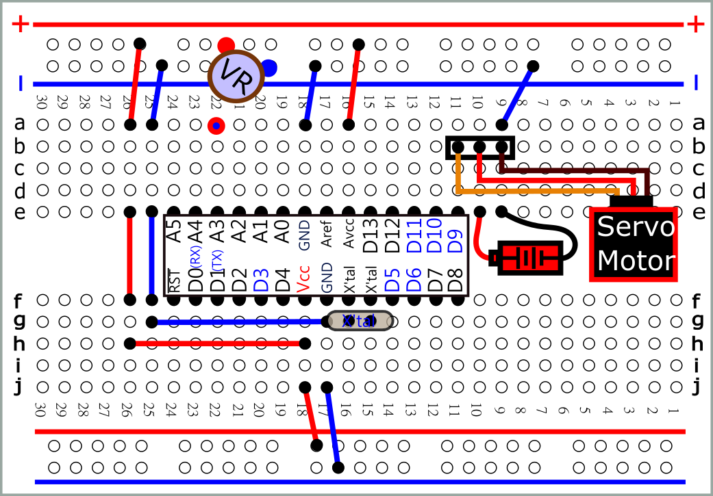
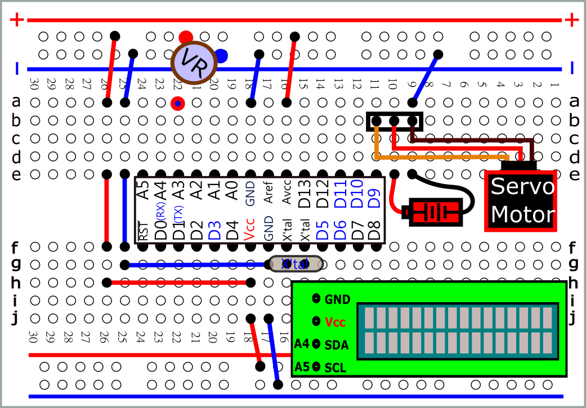

|
伺 服馬達（servo motor），因常用於遙控模型飛機，所以又常稱為RC伺服機（RC
Servo，Radio Control Servo，Remote Control Servo）、伺服馬達舵機。
|
 |
| 使用 電源模組 馬達電源 |
 svg |
| #include
<Servo.h> Servo myS; void setup(){ myS.attach(9); myS.write(90); //0~180 } void loop(){} /* 產生50 HZ 信號 使用Servo物件時, D9,D10 PWM不能使用 */ |
 //upload 之後，裝上舵臂 |
| #include
<Servo.h> Servo myS; void setup() { myS.attach(9); myS.write(90); } void loop() { myS.write(180); delay(1000); myS.write(90); delay(1000); myS.write(0); delay(1000); myS.write(90); delay(1000); } |
 //旋轉1度約需4~5 ms |
|
#include
<Servo.h> void
loop() { |
 svg |
| #include
<Servo.h> Servo myS; int vin=0; void setup() { vin=analogRead(A1); vin = map(vin, 0, 1023, 0, 180); myS.write(vin); delay(100); } |
 svg |
| #include
<Wire.h> #include <LiquidCrystal_I2C.h> #include <Servo.h> LiquidCrystal_I2C lcd(0x3F,16,2); Servo myS; int vin=0; void setup() { lcd.init(); lcd.backlight(); myS.attach(9); } void loop() { vin=analogRead(A1); vin = map(vin, 0, 1023, 0, 180); myS.write(vin); lcd.clear(); lcd.cursor(); lcd.setCursor(0,0); lcd.print("vin="); lcd.print(vin); delay(100); } |